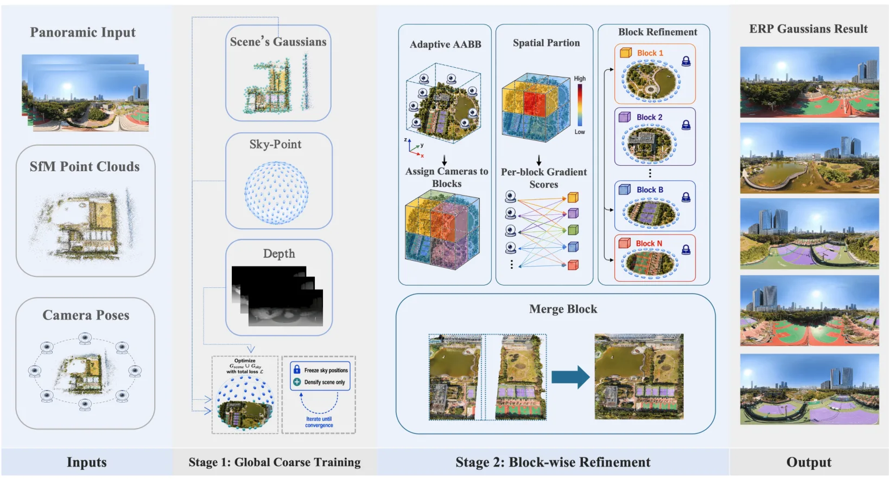
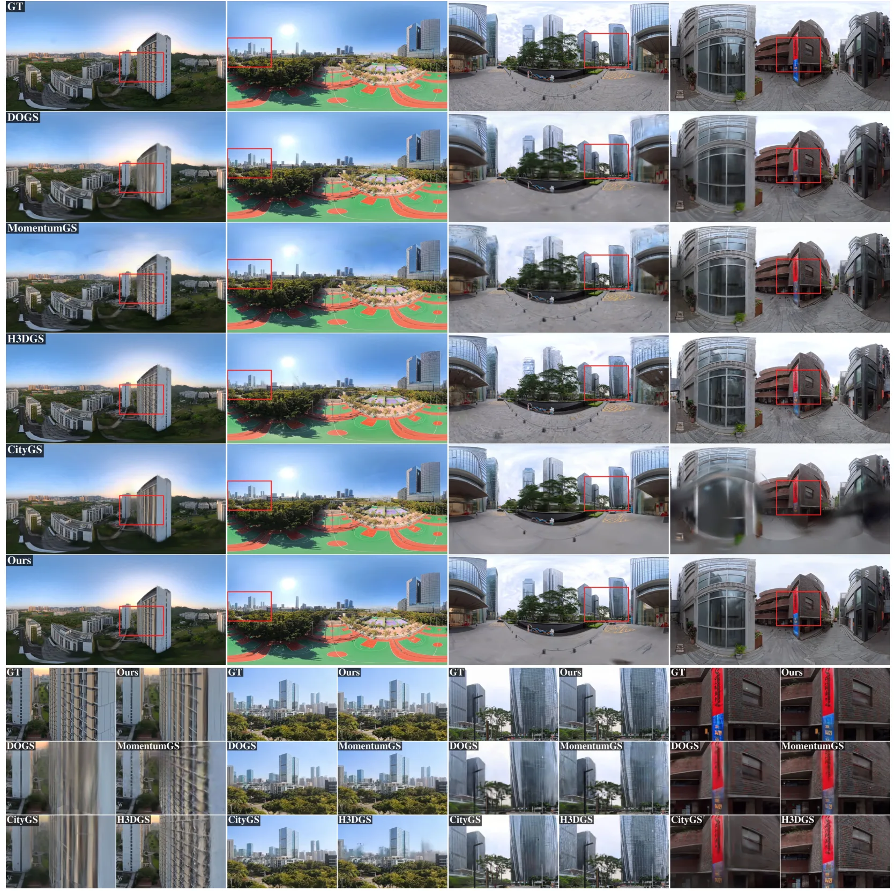
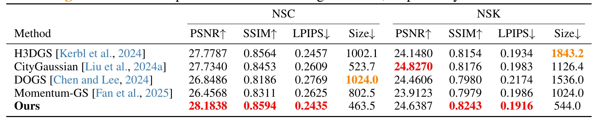
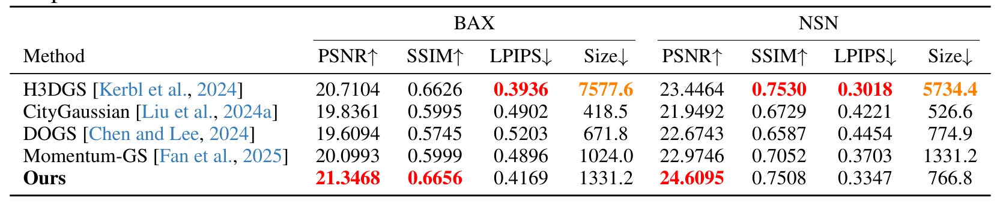

面向全景户外重建的几何与梯度分区策略Geometry and Gradient-based Partitioning for Panoramic Outdoor Reconstruction
大规模户外 3DGS、全景采集和分块并行训练高度相关；公开模型、代码和 Pano360 数据集。需验证深度先验、分区边界一致性和与已有 city-scale 3DGS 方法的公平对比。
一句话工作总结
针对全景图全局可见导致的 3DGS 分块退化，提出几何与梯度驱动的户外全景分区训练框架。
摘要
PanoLOG 研究如何把 3D Gaussian Splatting 扩展到大规模全景户外场景。全景 ERP 图像具有 360° 视场，能降低采集成本，但全局可见性会让依赖局部 camera frustum 的分区策略退化为全局训练。作者提出两阶段 coarse-to-fine 框架：global coarse stage 通过 sky-sphere modeling 和 panoramic monocular depth supervision 稳定几何；refinement stage 的 G²PS 使用 parallax-driven uncertainty 构建 adaptive bounding volumes，并通过 gradient-based importance scoring 分配相机，从而支持可扩展的 block-parallel training。
Scaling 3D Gaussian Splatting (3DGS) to large outdoor scenes is costly in both data acquisition and computation. Adopting panoramic images with equirectangular projection (ERP) can reduce capture effort via their full $360^{\circ}$ field of view, yet the resulting omnipresent visibility invalidates existing partitioning strategies that rely on local camera frustums, causing block-wise optimization to degenerate into global training. Thus, we propose PanoLOG, a two-stage coarse-to-fine framework equipped with a Geometry and Gradient-based Partitioning Strategy tailored for large-scale panoramic 3DGS reconstruction. In the global coarse stage, PanoLOG leverages sky-sphere modeling and panoramic monocular depth supervision for reliable geometry, while in the refinement stage, G$^2$PS builds adaptive bounding volumes via parallax-driven uncertainty and assigns cameras via gradient-based importance scoring. Furthermore, we construct Pano360, the first benchmark on large-scale panoramic dataset for outdoor scene reconstruction. Extensive experiments demonstrate that G$^2$PS achieves state-of-the-art rendering quality while maintaining scalable, block-parallel training. Our models, training code, and dataset are publicly available.
中文解读摘录
- 链接：https://arxiv.org/abs/2607.08769 ｜ PDF：https://arxiv.org/pdf/2607.08769 ｜ 项目页：https://insta360-research-team.github.io/GGPS-Website
- 中文题名：面向全景户外重建的几何与梯度分区策略
- 关键信息：PanoLOG 针对 equirectangular panoramic images 的 360° 全局可见性问题，指出传统依赖局部 camera frustum 的分区策略会退化为全局训练。方法先在 global coarse stage 用 sky-sphere modeling 和 panoramic monocular depth supervision 稳定几何，再在 refinement stage 用 G²PS 基于 parallax-driven uncertainty 构建 adaptive bounding volumes，并用 gradient-based importance scoring 分配相机。
- 为什么值得看：大规模户外 3DGS 的瓶颈之一是数据采集和分块训练。全景相机能降低采集成本，但会破坏现有分块假设；这篇正面处理 ERP 全局可见导致的 scalability 问题，并发布 Pano360 基准、训练代码和数据。
- 需要核查：全景深度先验质量、天空建模对不同天气/夜间场景的鲁棒性、G²PS 与 Mega-NeRF/Block-NeRF/CityGaussian 类方法的公平对比，以及分区边界处的几何/外观一致性。
图表/页面预览

{kind=link}

{kind=link}

{kind=link}

{kind=link}
